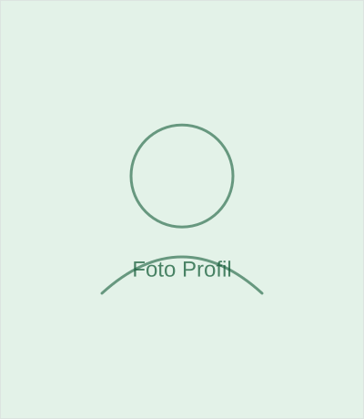
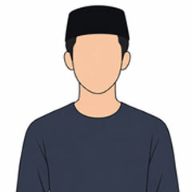

Struktur Organisasi
Alur tanggung jawab dari pembina hingga unit pelaksana program.
Pimpinan
![Foto [Nama Ketua]](images/team/ketua.svg)
ABDUROHIM
Pembina Yayasan
Memimpin arah strategis dan memastikan setiap program berjalan sesuai visi misi.
![Foto [Nama Sekretaris]](images/team/sekretaris.svg)
TONY M.S.
Pengawas
Mengelola administrasi, arsip, dan komunikasi kelembagaan yayasan.
![Foto [Nama Bendahara]](images/team/bendahara.svg)
JARMANTO
Ketua
Bertanggung jawab atas pengelolaan keuangan yang transparan dan akuntabel.
NURKHOLIK
Sekretaris
Bertanggung jawab atas pengelolaan keuangan yang transparan dan akuntabel.
WARTO
Bendahara
Bertanggung jawab atas pengelolaan keuangan yang transparan dan akuntabel.
Anggota & Tim Divisi
Para penanggung jawab bidang dan unit kerja operasional yayasan.

Muhlisun
Ketua Bidang Sosial
Mengoordinasikan pelaksanaan seluruh program dan inisiatif berbasis kemasyarakatan guna mempererat solidaritas sosial.

Sudiman
Ketua Bidang Kemanusiaan
Memimpin dan mengarahkan strategi penanggulangan tanggap darurat bencana serta layanan aksi sosial kemanusiaan publik.

Hasyim Munir
Ketua Bidang Keagamaan
Membina kerukunan umat, mengoordinasikan syiar Islam, serta mengawasi tata kelola lembaga keagamaan di bawah yayasan.

Deri
Ketua Kesenian PW
Mengembangkan potensi seni dan budaya lokal serta mengoordinasikan pementasan atau event kebudayaan di lingkungan yayasan.

Akmal
Ketua LBH Padang Wulan
Memberikan layanan bantuan hukum, advokasi, serta penyuluhan kesadaran hukum secara pro-bono bagi warga yang membutuhkan.

Wawan
Ketua UPZ Padang Wulan
Mengoptimalkan pengumpulan dan pendistribusian Zakat, Infak, serta Sedekah (ZIS) secara transparan dan tepat sasaran.
Raswin
Ketua Sarana & Prasarana PW
Bertanggung jawab penuh atas pemeliharaan, perawatan fasilitas fisik, serta penyediaan inventaris penunjang operasional yayasan.
Samin
Ketua Sampah Berkah PW
Menginisiasi program bank sampah mandiri, pemilahan limbah, serta daur ulang bernilai ekonomis untuk kelestarian lingkungan.
Nurkholik
Ketua Agro Wakaf PW
Mengelola aset produktif wakaf di sektor pertanian dan perkebunan guna mendukung kemandirian finansial program sosial yayasan.
D. Wardiman
Ketua Pendidikan PW
Merumuskan kurikulum, mengawasi mutu pembelajaran, serta memperluas akses edukasi formal maupun non-formal bagi masyarakat.
Warto
Ketua Rukun Kematian PW
Mengorganisir pelayanan sosial kemasyarakatan dalam pengurusan fardu kifayah serta santunan duka bagi keluarga yang berduka.
Karjo
Ketua L. Pembangunan PW
Mengawasi perencanaan teknis dan pelaksanaan konstruksi fasilitas fisik bangunan keagamaan maupun sarana publik.
Abdul Gani
Ketua Pemuda Nurul Fata
Menggerakkan potensi dan kreativitas generasi muda melalui kegiatan positif, keorganisasian, serta bakti sosial.
Jasirun
Ketua DKM Nurhidayah
Menjaga kemakmuran masjid, mengatur jadwal ibadah rutin, serta merawat kebersihan dan kenyamanan area masjid.
Dede Nurhasanah
Ketua TPQ Al-Hidayah
Membimbing metode baca-tulis Al-Qur'an serta menanamkan fondasi akhlak mulia sejak dini bagi anak-anak.
Engkos
Ketua M. Ta'lim Al-Hidayah
Mengoordinasikan majelis taklim bapak-bapak/ibu-ibu, menyusun jadwal pengajian rutin, serta mempererat ukhuwah islamiyah.

Cipto N.
Ketua Sarana Digital PW
Mengelola transformasi teknologi, infrastruktur jaringan, serta sistem informasi digital dan media online yayasan.
Ingin Bergabung Sebagai Relawan?
Kami membuka peluang bagi siapa pun yang ingin berkontribusi bersama tim kami.